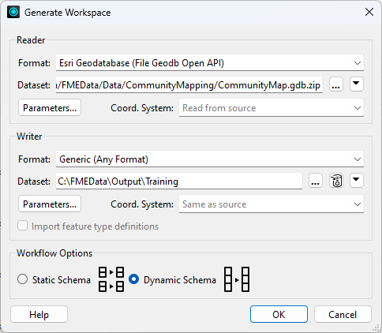
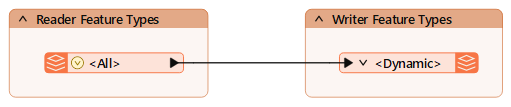
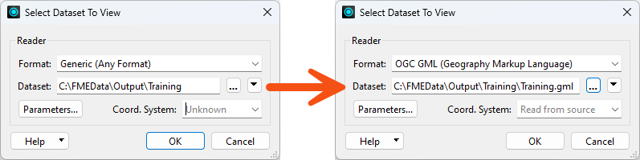
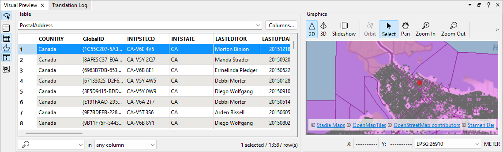

Learning Objectives
After completing this lesson, you'll be able to:
- Create a dynamic workspace using Generate Workspace.
- Use a Generic reader in a dynamic workspace.
Resources
- Complete workspace
- If your computer has FMEData, the file path is C:\FMEData\Workspaces\AdvancedReadingAndWriting\exercise-create-a-basic-dynamic-workspace-complete.fmw
- CommunityMap.gdb.zip
- C:\FMEData\Data\CommunityMapping\CommunityMap.gdb
- Addresses.zip
- C:\FMEData\Data\Addresses\Addresses.gdb
Introduction
You are working on a workspace to let users translate a Geodatabase into a format of their choice. In an earlier exercise, we built the workspace using a generic writer and a user parameter so the end user could choose the format.
However, that workspace had a limitation: every output dataset included all the source table attributes. It would also be helpful if that workspace could handle any source Geodatabase, not just the community maps dataset.
So, let's use dynamic reader and writer feature types to make these improvements.
1) Start Workbench
Start FME Workbench (2024.1 or later) and click File > Generate Workspace. Fill in the dialog as follows:

The dynamic schema parameter is essential to handle all aspects of the source schema for input datasets.
2) Inspect Workspace
Inspect the newly created workspace:

There is one reader feature type and one writer feature type. The reader feature type shows a list of attributes if you expand it (via the right-pointing arrow), but the writer feature type doesn't. It is, however, labeled <Dynamic>.
As in the previous exercise, there are Feature Types to Read and Output Format user parameters.
If you wish, you can create a more limited version of the output format parameter by following steps 3-5 in the previous exercise, although this isn't necessary for what we're doing here.
But please don't delete the SourceDataset_FILEGDB user parameter; we'll need that soon.
3) Run Workspace
Run the workspace with Prompt for User Parameters enabled.
When prompted, select some source tables from Feature Types to Read (any will do) and set the output format (again, any will do, though note that some will produce nonsensical output if you haven't limited the options). The workspace will run to completion. Check the output to ensure it is correct - it should be in the specified format and should preserve the original schema.

When you use the View Written Data button on a dynamic or generic writer feature type, FME will usually show the Select Dataset to View dialog. This dialog appears because FME does not know the dataset format and path in advance. If you run into this issue, simply specify the correct format and dataset to view the data.

4) Rerun Workspace
Now, rerun the workspace.
Be sure to use the option to Rerun Entire Workspace (Shift+F5):

Otherwise, FME would use cached data instead of the actual source data, which is not what we want.
If you use Run Workspace (F5), you will not be prompted to choose the source (File Geodatabase) parameter in the Translation Parameter Values dialog. If the source parameter is missing from the prompts, you likely chose Run Workspace instead of Rerun Entire Workspace.
When prompted, enter https://s3.amazonaws.com/FMEData/FMEData/Data/Addresses.zip for the File Geodatabase parameter (or click the browse button and browse to C:\FMEData\Data\Addresses\Addresses.gdb).
Clear the Feature Types to Read parameter and click Run to rerun the workspace.
Inspect the output. The workspace wrote the address data instead of the Community Mapping data:

Notice that the output feature types (PostalAddress and PostcodeBoundaries) are all as listed in the original data. Also, notice that the attributes are the same as in the original.
This result shows that a dynamic workspace can handle any source schema and write it out to a new dataset just as it was in the source data.